מה המערכת עושה, ולמה כדאי להבין את ההיגיון שלה
המערכת מלווה עבודת גמר לאורך זמן. היא מרכזת במקום אחד את המשימות והמועדים, ההגשות של התלמידים, הבדיקה וההערות, והציונים.
העיקרון החשוב ביותר במערכת: אתם עובדים בשקט, והתלמידים רואים רק מה שפרסמתם. הערות שכתבתם, ניקוד לפי מחוון וציונים נשארים אצלכם עד שאתם לוחצים על פעולת פרסום מפורשת.
נשאר אצלכם (פנימי)
- הערות טיוטה
- סימון "סיימתי לבדוק" והערת טיפול
- ניקוד קריטריונים במחוון
- ציונים שלא פורסמו
- פנקס Notes והתזכורות המנהלתיות
נראה לתלמיד (רק אחרי פעולה שלכם)
- משוב שנשלח
- ציון משימה שפורסם (ציון שלם בלבד)
- ציון כולל שפורסם
- המשימות, המועדים והארכות שלו
שבוע ראשון: סדר עבודה מומלץ
אל תנסו ללמוד הכול בבת אחת. בנו קודם מחזור קטן שעובד, ורק אז הרחיבו.
- הגדירו את המחזור מחזורשם, תחילת המחזור, יעד סיום כתיבה ומועד הגנה משוער. ההגדרות האלה משפיעות על התצוגה של הגאנט והלוח.
- הכניסו תלמידים וקבוצות תלמידים, קבוצותהוסיפו תלמידים, צרו קבוצות ושייכו כל תלמיד לקבוצה. מסך הבית יזכיר לכם תלמידים בלי קבוצה וקבוצות ריקות.
- בנו תוכנית עבודה משימות, בנק משימותהכי מהיר: "החל תוכנית עבודה מלאה". אפשר גם להוסיף משימות בודדות מהבנק או ליצור חדשות. לכל משימה קבעו סוג, מועדים ומשקל.
- בדקו את התמונה הכוללת גאנט, לוח שנהחפשו חפיפות, עומס וחופשות. ב"חופשות ואילוצים" לוחצים בחירת חופשות וחגים, מסמנים מה שמתאים לכם (אפשר לסמן קבוצה שלמה בלחיצה), והחופשות נכנסות לגאנט (פרטים).
- שייכו מחוונים מחוונים וניקודבכל משימה שתנקדו, בחרו מחוון בעמודה "מחוון".
- נסו מחזור בדיקה הכולצרו מחזור חדש קטן עם שני תלמידים ומשימת הגשה אחת, והריצו את כל התהליך עד פרסום ציון. אחרי פעם אחת רוב המסכים יהיו ברורים.
איפה כל דבר נמצא
תפריט הניווט בצד מחולק לארבע קבוצות לפי סדר העבודה. אפשר לקפל ולפתוח כל קבוצה, והמערכת זוכרת את הבחירה.
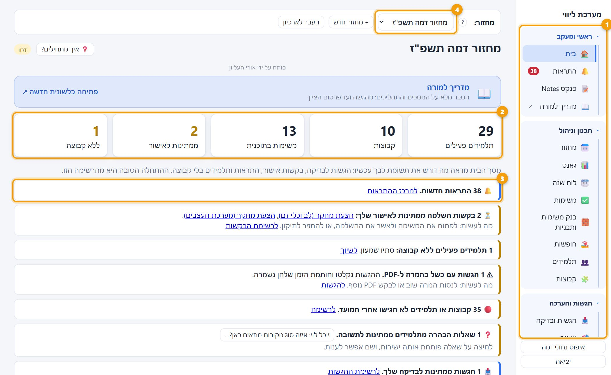
- תפריט הניווט, בארבע קבוצות
- מספרי מצב: תלמידים, קבוצות, משימות, בקשות ממתינות
- מה דורש טיפול עכשיו
- בחירת מחזור, מחזור חדש והעברה לארכיון
| קבוצת תפריט | מסכים | למה משמשת |
|---|---|---|
| ראשי ומעקב | בית, התראות, פנקס Notes | לדעת מה דורש טיפול ולרשום לעצמכם |
| תכנון וניהול | מחזור, גאנט, לוח שנה, משימות, בנק משימות ותבניות, חופשות, תלמידים, קבוצות | לבנות ולנהל את התוכנית והמשתתפים |
| הגשות והערכה | הגשות ובדיקה, ציונים, מחוונים | לבדוק, לתת משוב, לנקד ולהעריך |
| ניהול מערכת | גיבוי ושחזור | לשמור ולהחזיר מידע |
גאנט, לוח שנה, משימות: מה ההבדל?
משימות
המקום לנהל: ליצור, לערוך, לקבוע משקלים ולאשר השלמות.
גאנט
המפה החזותית של כל השנה: רצף, חפיפות ותלויות. כאן גם גוררים תאריכים.
לוח שנה
מתאים לשאלה "מה קורה השבוע?" לפי תאריכים, חודשי או שבועי.
מהגשה ועד ציון מפורסם
זה התהליך המרכזי במערכת. הוא עובר בכמה מסכים, ולכן כדאי להכיר אותו ברצף.
- התלמידים מגישים צד התלמידהם מעלים קובץ Word או PDF. המערכת ממירה קובץ Word ל-PDF לצורך הבדיקה, שומרת כל גרסה וחותמת אותה בזמן. לפני הבדיקה התלמיד לא רואה כלום מצדכם.
- מקבלים התראה בית או התראותבמסך הבית מופיע "הגשות ממתינות לבדיקה שלך". גם הרשימה ב"הגשות ובדיקה" נפתחת כברירת מחדל על "דורשים טיפול".
- פותחים לבדיקה הגשות ובדיקהבשורת ההגשה לוחצים בדיקה. אם ההמרה ל-PDF עוד לא הסתיימה, הכפתור כבוי עד שהיא מוכנה.
- קוראים ומעירים בדיקת עבודהגוררים על קטע טקסט במסמך, בוחרים קטגוריה וכותבים הערה, או מוסיפים הערה כללית. ההערות נשמרות כטיוטה.
- מסמנים "סיימתי לבדוק" בדיקה (פנימי)זה סימון פנימי למעקב שלכם. הוא לא שולח דבר.
- מנקדים ניקוד (פנימי)ממלאים את הקריטריונים במחוון. כשכולם מלאים, לוחצים קבע כציון המשימה. הציון נכנס לטבלת הציונים ועדיין לא גלוי לתלמיד.
- שולחים משוב משוב לתלמידיםלוחצים שליחת משוב לתלמידים. רק כעת ההערות נעשות גלויות. הערה שנשלחה אי אפשר לערוך.
- מפרסמים ציון מצב פרסום, או ציוניםבכרטיס "מצב פרסום" לוחצים פרסם ציון לכל תלמיד, או מפרסמים מרוכז במסך "ציונים".
- בודקים מה התלמיד רואה הכולהתלמיד רואה ציון שלם בלבד, בלי פירוט הקריטריונים. אם טעיתם, "בטל פרסום" מסיר את הפריט מהתצוגה שלו.
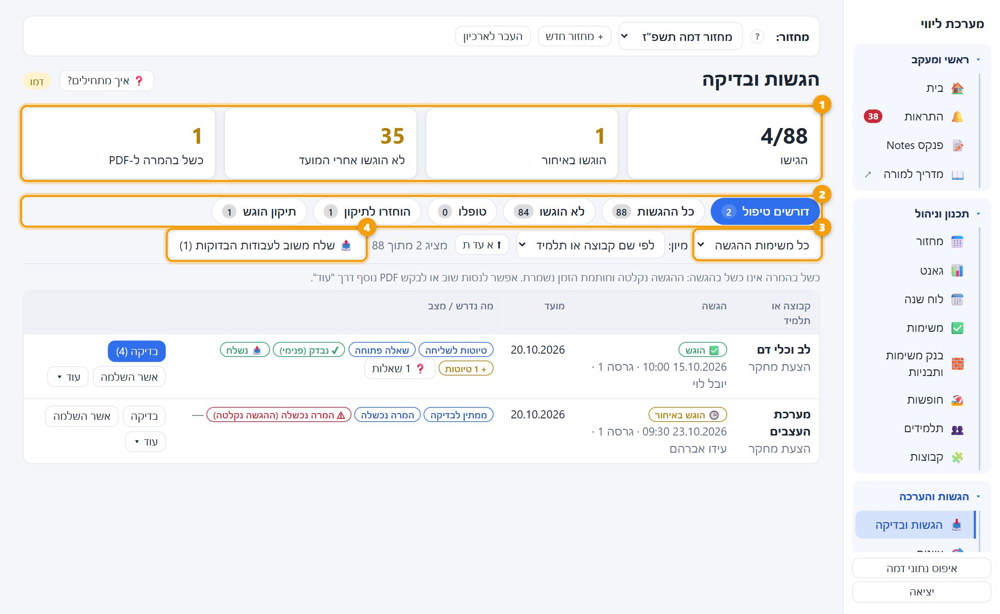
- סיכום: כמה הגישו, איחורים, לא הוגשו, כשל בהמרה
- מסננים מהירים (ברירת המחדל: "דורשים טיפול")
- בחירת משימה
- שליחת משוב מרוכזת לעבודות שסומנו "סיימתי לבדוק"
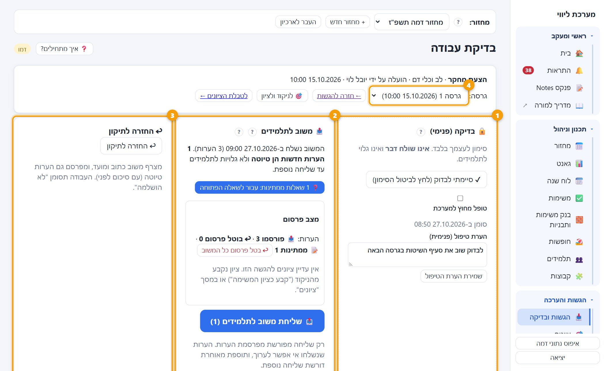
- בדיקה (פנימי): סימון לעצמכם בלבד
- משוב לתלמידים: הפעולה היחידה שמפרסמת הערות, וגם "מצב פרסום" של ציונים
- החזרה לתיקון (ראו הפרק הבא)
- בחירת גרסה של ההגשה
החזרה לתיקון: כשהעבודה צריכה גרסה נוספת
כשעבודה דורשת תיקונים לפני שתנקדו אותה, מחזירים אותה לתלמידים במקום להשאיר אותה פתוחה.
- בגרסה האחרונה של העבודה לוחצים החזרה לתיקון בדיקת עבודהאפשר להחזיר רק את הגרסה האחרונה. הכפתור לא יופיע בגרסה ישנה, ולא בזמן שכבר ממתינים לתיקון.
- כותבים משוב וקובעים מועד תיקוןהמשוב נשלח עם ההחזרה, וגם הערות הטיוטה מתפרסמות (מוצג סיכום לפני). העבודה מסומנת "לא הושלמה".
- ממתינים לגרסה מתוקנתאפשר לעדכן את מועד התיקון (ארכה) בתיבה "החזרה לתיקון" כל עוד התיקון לא הוגש.
- התלמיד מגישהגרסה החדשה מסומנת בהגשות כ"תיקון הוגש". היא לא נחשבת עבודה חדשה שממתינה לבדיקה, וגם אינה אישור.
- בודקים שוב, ביוזמתכם פתח לבדיקה חוזרתאם רוצים לבדוק את התיקון, לוחצים פתח לבדיקה חוזרת. הניקוד של כל גרסה נשמר בנפרד.
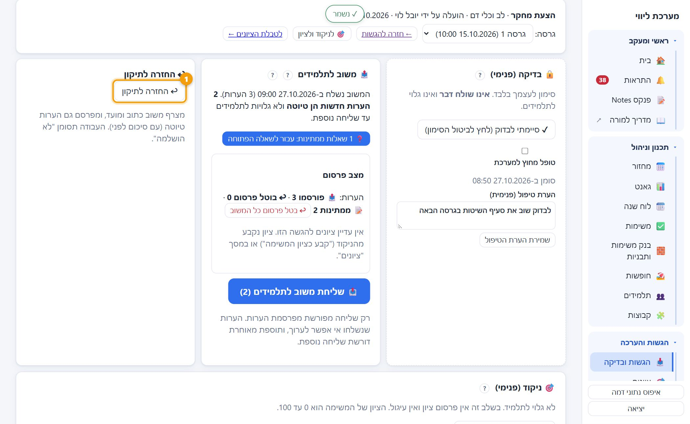
- החזרה לתיקון, עם משוב ומועד
שינוי מועדים וארכות
יש שלוש דרכים לשנות מועד, והן שונות זו מזו:
| מה צריך | הפעולה | איפה |
|---|---|---|
| להזיז משימה לכל הכיתה | גוררים את הפס בגאנט, או את קצותיו לשינוי התחלה או סיום | גאנט, תצוגת "כל הכיתה" |
| להזיז הרבה משימות יחד | שינוי מועד כיתתי | גאנט, תצוגת "כל הכיתה" |
| מועד שונה לקבוצה או לתלמיד אחד | ארכה נקודתית: בוחרים יחידה ותאריך, ולוחצים "הוספת ארכה" | חלון המשימה (לחיצה על פס או "פרטים ועריכה") |
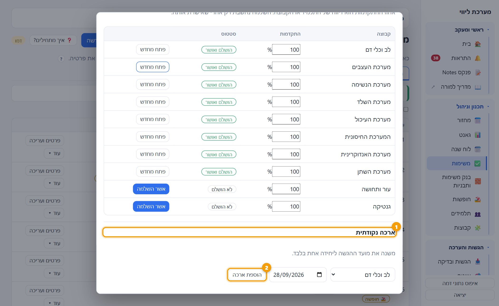
- ארכה נקודתית: בוחרים קבוצה או תלמיד ותאריך חדש
- הוספת ארכה
מה קורה כשמזיזים תאריך בגרירה
אם לשינוי יש השלכות, מוצג חלון אישור לפני השמירה. הוא מציג:
- תלויות שיישברו: משימה שתתחיל לפני שהקודמת הסתיימה.
- חפיפה עם חופשה. המערכת לא מזיזה שום דבר אוטומטית.
- ארכות קיימות. כברירת מחדל הן זזות יחד עם המשימה, ואפשר לסמן להשאיר אותן במקומן.
- אפשרות להזיז גם את המשימות התלויות באותו מספר ימים.
אם סוגרים את החלון בלי לאשר, הפס חוזר למקומו.
סיום מחזור עבודות הגמר
- בודקים את טבלת הציונים ציוניםאין תלמיד שחסר לו ציון, וסכום המשקלים הנספרים הוא 100%. אחרת הציון הכולל "לא מחושב" וההסבר מופיע ליד התלמיד.
- משלימים או מחריגים בנימוקתלמיד שלא הגיש מקבל 0, או מוחרג בהחלטה מנומקת. עריכת משקלים אישיים אפשרית כשיש צורך.
- מפרסמים לפי החלטה פדגוגית"פרסום ציון כולל לכל מי שהציון הכולל שלו מחושב", או לתלמיד אחד בכל פעם.
- מורידים גיבוי גיבוי ושחזורהגיבוי לא כולל את קובצי ההגשות. אלה נשארים ב-Drive, ולכן אל תמחקו אותם משם.
- מעבירים לארכיון שורת המחזורהמחזור נשמר לקריאה בלבד. בסוף אפשר להחליט אם התלמידים יוכלו לצפות בו.
בית והתראות
מסך הבית הוא נקודת ההתחלה היומית: הוא מראה מה דורש את תשומת לבכם עכשיו. בכל הודעה יש קישור למקום שבו מטפלים בה.
הודעות שיכולות להופיע
- התראות חדשות ושאלות הבהרה מתלמידים.
- בקשות השלמה ממתינות לאישור: משימות "אישור ביצוע" שתלמיד סימן כהושלמו.
- הגשות ממתינות לבדיקה, גרסאות מתוקנות שהוגשו, ועבודות שסומנו "סיימתי לבדוק" וטרם נשלח עליהן משוב.
- הגשות עם כשל בהמרה ל-PDF. ההגשה נקלטה וחותמת הזמן נשמרה. אפשר לנסות המרה שוב או לבקש PDF נוסף.
- קבוצות או תלמידים שלא הגישו אחרי המועד.
- תלמידים ללא קבוצה וקבוצות ריקות.
- אזהרות תכנון: תלויות שבורות.
- תזכורת גיבוי כשעברו שבעה ימים או יותר.
תזכורות מנהלתיות (📌)
כרטיס שמרכז אירועים מנהלתיים אישיים שלכם, למשל מועדים של בית הספר. הם אינם משימות, התלמידים לא רואים אותם, והם לא משפיעים על ציונים. בכל תזכורת יש סימון כבוצע ועריכה, ואפשר להוסיף אירועים מוכנים בכפתור "הוסף אירועים מנהלתיים". הם מופיעים גם בגאנט.
מחזור, משימות ובנק משימות
מחזור
מחזור הוא שנת עבודה של קבוצת תלמידים, עם התלמידים, הקבוצות, המשימות, ההגשות והציונים שלה. אפשר לנהל כמה מחזורים. המחזור שנבחר בשורה העליונה הוא זה שרואים ועורכים, ומעבר ביניהם משנה את כל הנתונים המוצגים.
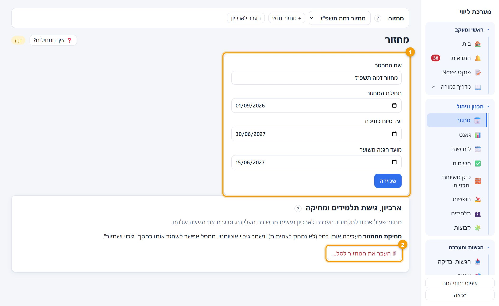
- שם, תחילת המחזור, יעד סיום כתיבה ומועד הגנה
- העברת המחזור לסל (לא מחיקה לצמיתות)
- מחזור חדש: מתחיל ריק. בנק המשימות משותף ואפשר להחיל אותו עליו.
- העבר לארכיון: קריאה בלבד, וגישת התלמידים נסגרת. במסך "מחזור" אפשר לפתוח להם גישת צפייה בלי להחזיר את המחזור לפעיל.
- העבר לסל: נשמר גיבוי אוטומטי, והמחזור נשאר בסל לפחות 30 יום. שחזור מהסל נעשה ב"גיבוי ושחזור".
משימות
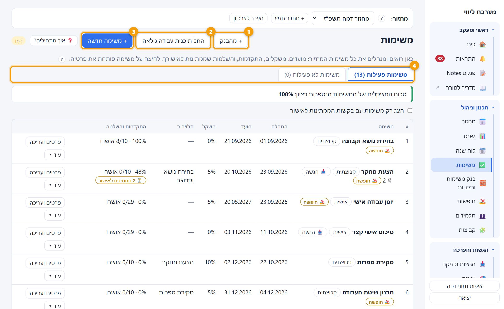
- הוספה מהבנק
- החלת תוכנית עבודה מלאה
- משימה חדשה
- לשוניות: פעילות ולא פעילות
בכל משימה קובעים:
| שדה | מה זה אומר |
|---|---|
| סוג: קבוצתית או אישית | קבוצתית ניתנת לקבוצה, אישית לכל תלמיד בנפרד |
| סוג המשימה | אישור ביצוע: המורה מאשר שהושלמה. הגשת תוצר: התלמיד מעלה קובץ. רק הגשת תוצר מופיעה ב"הגשות ובדיקה" ומקבלת תזכורות. |
| משקל (%) | חלקה של המשימה בציון העבודה. סכום המשקלים הנספרים צריך להיות 100%. |
| התחלה ומועד הגשה | חלון הזמן, כפי שיוצג בגאנט וללוח |
| תלויה במשימות | משימות שצריכות להסתיים לפני שהמשימה מתחילה |
| למי המשימה | בלי סימון: לכל הקבוצות או התלמידים |
| קישורים | קישורי עזר שהתלמיד רואה |
התקדמות לעומת השלמה
אחוז התקדמות הוא דיווח של התלמיד או הקבוצה כמה כבר בוצע, ואינו ציון. השלמה נחשבת רק אחרי שאישרתם. תלמיד יכול לבקש אישור, ואתם מאשרים או מחזירים לתיקון. אפשר גם "פתח מחדש" אחרי אישור.
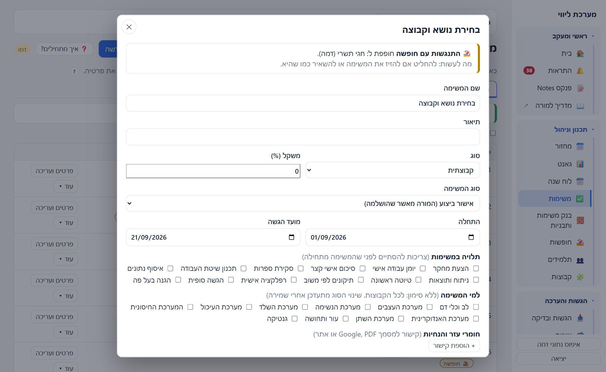
משימה לא פעילה
"הפוך ללא פעילה" (בתפריט "עוד") מוציאה משימה מהתוכנית ומשאירה אותה שמורה: היא לא בגאנט, בלוח, אצל התלמידים או בחישוב ההתקדמות, ואינה יוצרת איחורים. משימה לא פעילה אינה משימה שהושלמה. אפשר "הפעל מחדש" או מחיקה לצמיתות.
בנק משימות ותבניות
מאגר של משימות מוכנות, משותף לכל המחזורים שלכם. אפשר להוסיף משימה אחת, או להחיל תוכנית עבודה שלמה.
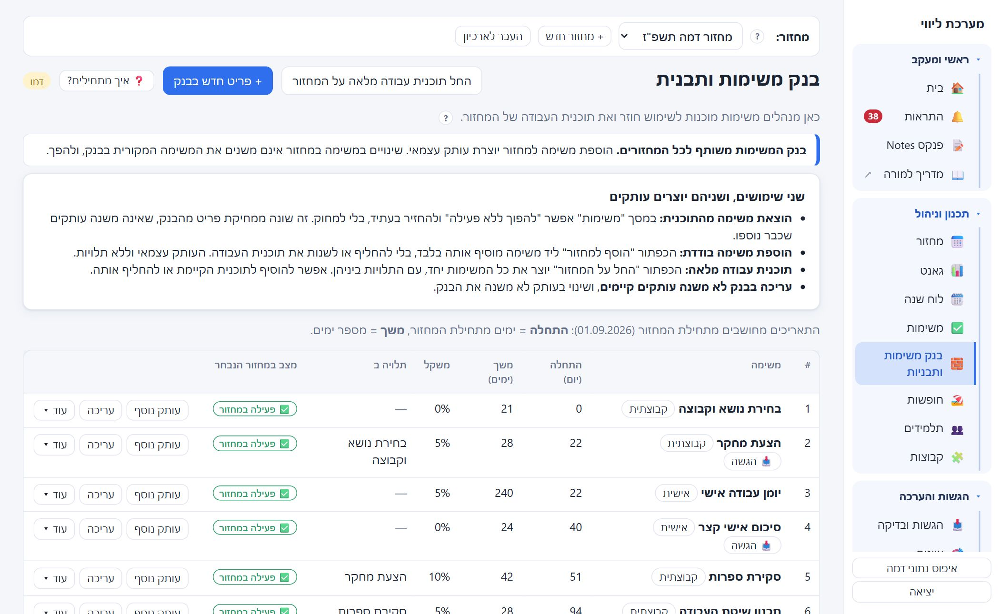
חופשות ואילוצים
הגדירו ימי חופשה או אילוצים. הם מסומנים בגאנט ובלוח, ומשימות החופפות אליהם מקבלות אזהרה. המערכת לא מזיזה מועדים אוטומטית.
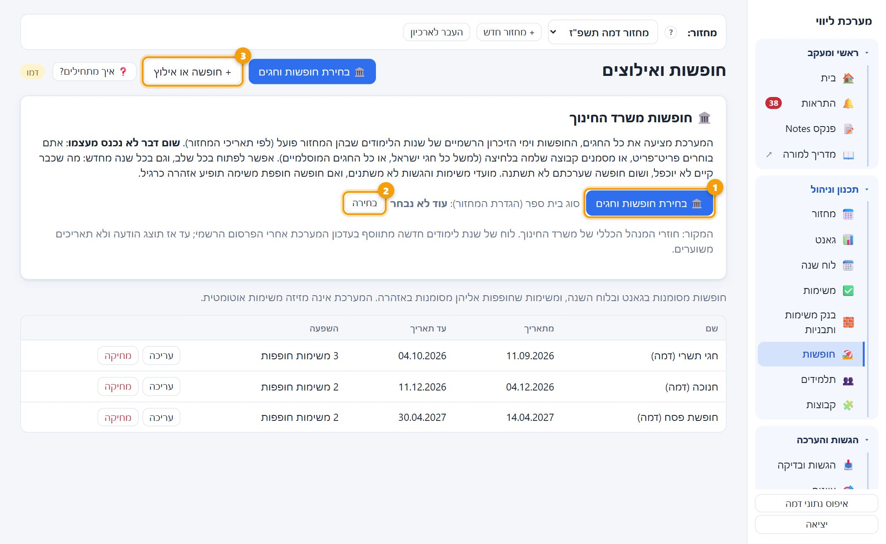
- בחירת חופשות וחגים של משרד החינוך
- סוג בית ספר (יהודי או ערבי), הגדרה של המחזור
- הוספה ידנית של חופשה או אילוץ
בחירת חופשות וחגים של משרד החינוך
במקום להקליד חופשות ביד, לוחצים 🏛️ בחירת חופשות וחגים. המערכת קובעת לבד את שנות הלימודים שבהן המחזור פועל (לפי תאריכי המחזור, כולל מחזור שנמשך על פני שתי שנים) ומציגה את כל החגים, החופשות וימי הזיכרון הרשמיים של משרד החינוך. שום דבר לא נכנס מעצמו: אתם בוחרים מה יתווסף. אפשר לפתוח את החלון בכל שלב, וגם שוב בכל שנה.
- בפעם הראשונה: בוחרים סוג בית ספריהודי או ערבי (יהודי מופיע ראשון). הלוח הרשמי שונה ביניהם. הבחירה נשמרת כהגדרה של המחזור (ולא רק בדפדפן), ולכן היא נשארת גם במכשיר אחר. אפשר לשנות אותה בכפתור "שינוי".
- מסמנים מה להכניסהרשימה מחולקת לקבוצות. אפשר לסמן פריטים אחד־אחד, ואפשר ללחוץ על שם קבוצה כדי לסמן אותה כולה: למשל "סמן: חגי ישראל וחופשות רשמיות" בלוח היהודי, או "סמן: מוסלמים" בלוח הערבי. בראש החלון מוצג כמה חופשות יתווספו.
- לוחצים "הוסף את הנבחרות"החופשות נוספות מיד. כל חופשה מסומנת בטבלה "🏛️ משרד החינוך", עם השנה, סוג בית הספר וקישור לחוזר הרשמי.
- עורכים או מוחקים כרצונכםכל חופשה אפשר לערוך (שם, תאריכים) או למחוק, כמו חופשה רגילה.
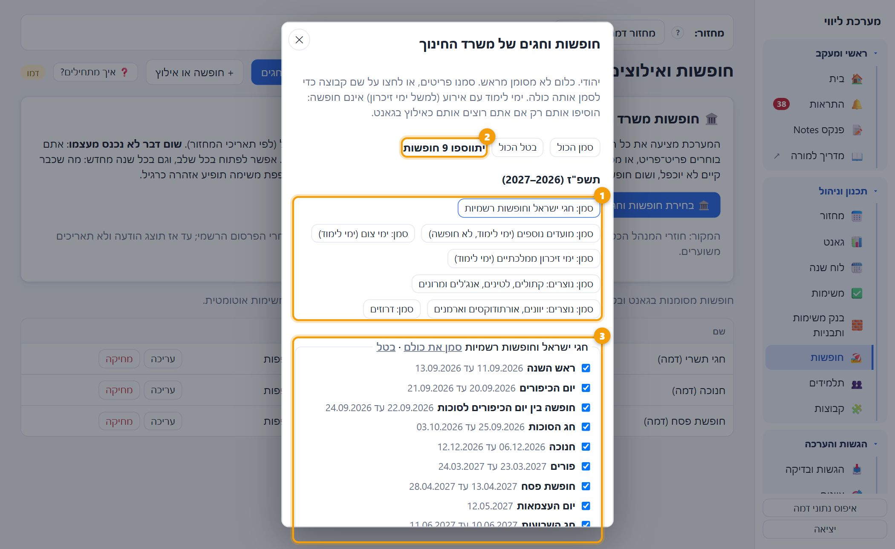
- קבוצות: לחיצה על שם קבוצה מסמנת את כולה
- כמה חופשות יתווספו
- הפריטים של הקבוצה, עם "סמן את כולם" ו"בטל"
מה יש ברשימה
- לוח יהודי: חגי ישראל וחופשות רשמיות (ראש השנה, יום כיפור, סוכות, חנוכה, פורים, פסח, יום העצמאות, שבועות); מועדים נוספים שהם ימי לימוד (חג הסיגד, ט"ו בשבט, ל"ג בעומר, יום ירושלים, אסרו חג); ימי צום; ימי הזיכרון הממלכתיים (כולל יום הזיכרון לשואה ולחללי צה"ל); וחגי עדות למורים נוצרים ודרוזים.
- לוח ערבי: חופשת החורף והאביב, חגי מוסלמים, העדה האחמדית, נוצרים (קתולים, אורתודוקסים ועוד), דרוזים, ומורים יהודים בבתי ספר ערביים. תנאים כמו "בית ספר בשישה ימי לימוד" מופיעים בנפרד.
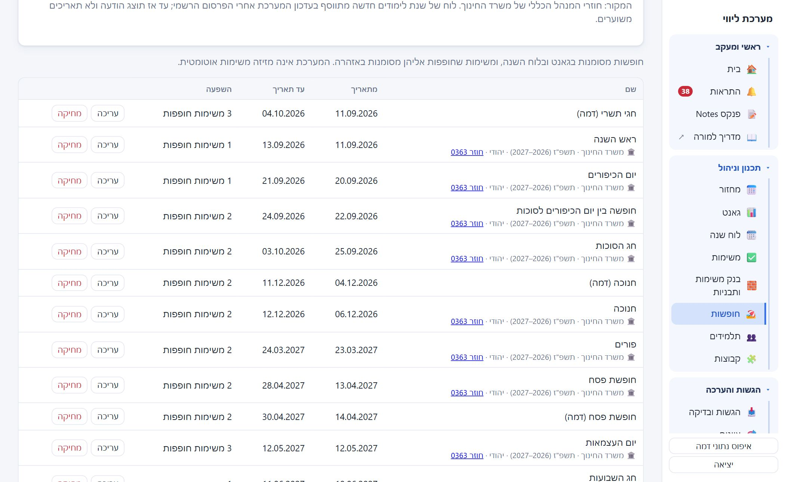
- אין כפילויות. פתיחה חוזרת מוסיפה רק מה שחסר, גם אם ערכתם חופשה שיובאה קודם.
- שום חופשה שערכתם לא נדרסת או נמחקת. חופשה שהוספתם ידנית נשארת כפי שהיא.
- מועדי המשימות וההגשות לא משתנים. אם חופשה חופפת משימה, תופיע האזהרה הרגילה, וההחלטה אם להזיז נשארת שלכם.
- חופשה שמחקתם אפשר להכניס שוב.
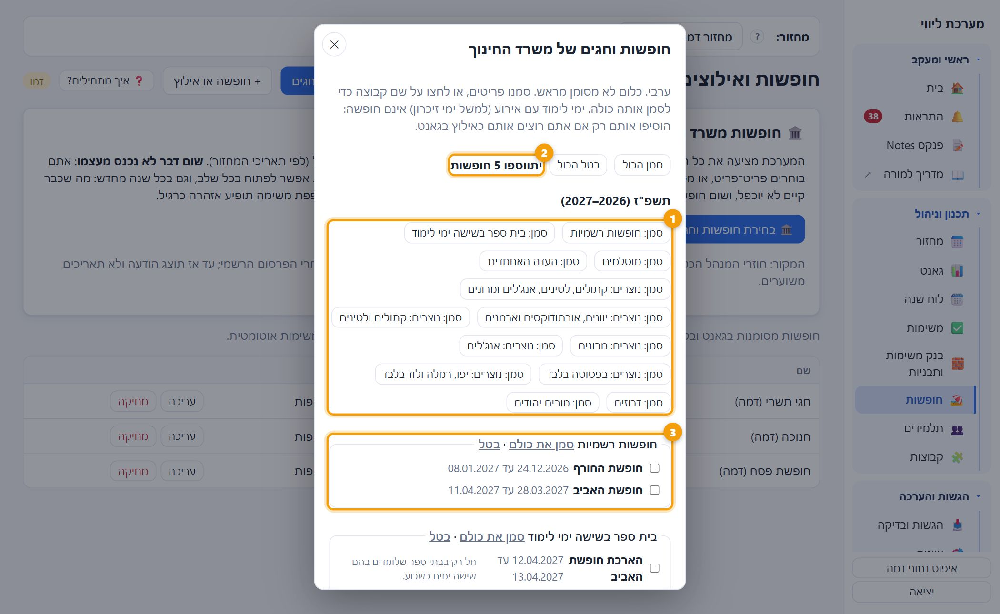
- קבוצות
- כמה חופשות יתווספו
- הפריטים של הקבוצה
גאנט ולוח שנה
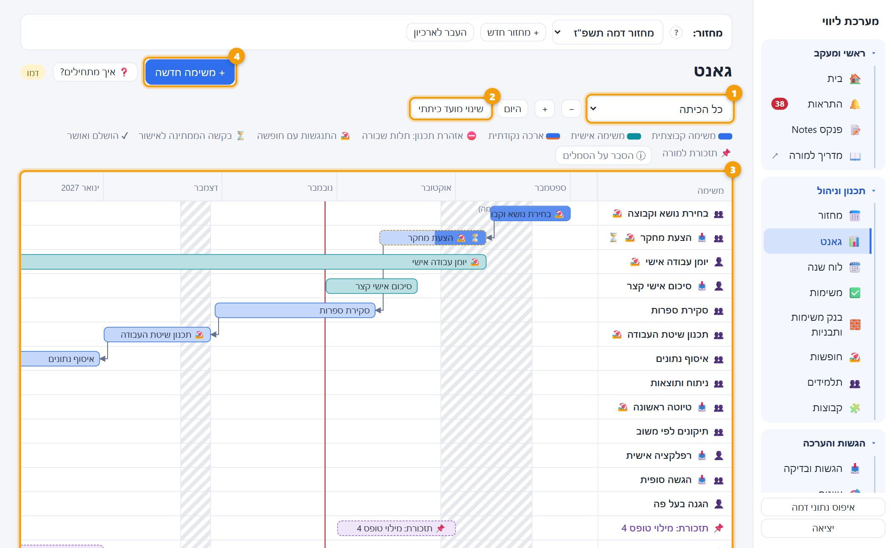
- מסנן: כל הכיתה, קבוצה או תלמיד
- שינוי מועד כיתתי
- הפסים: גוררים כדי להזיז, גוררים קצה כדי לשנות התחלה או סיום, לחיצה פותחת פרטים
- משימה חדשה
- כל הכיתה היא תצוגת העריכה. בתצוגת קבוצה או תלמיד הגאנט לקריאה בלבד.
- מקרא: משימה קבוצתית, אישית, ארכה נקודתית, אזהרת תכנון (תלות שבורה), התנגשות עם חופשה, בקשה הממתינה לאישור והושלם ואושר. הכפתור "ⓘ הסבר על הסמלים" מסביר כל סמל.
- כפתורי + ו- משנים את קנה המידה, ו"היום" קופץ לתאריך הנוכחי.
לוח שנה
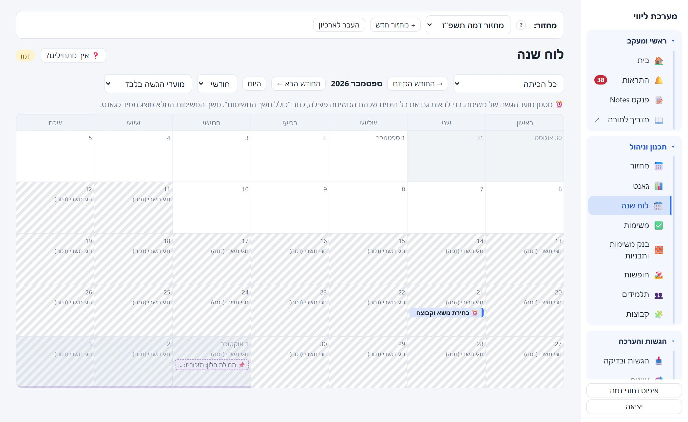
תלמידים וקבוצות
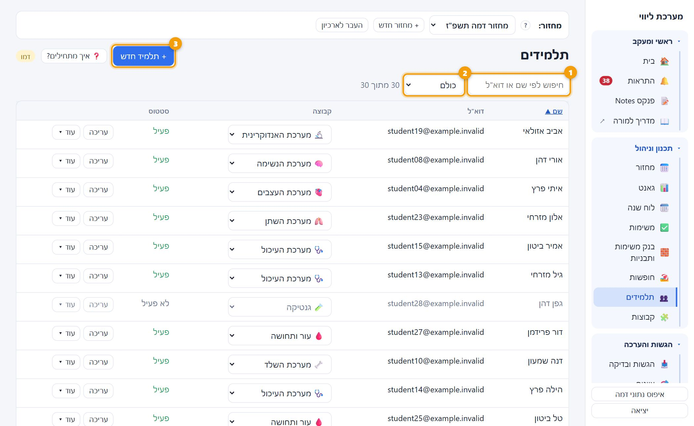
- חיפוש לפי שם או דוא"ל
- סינון: כולם, פעילים, לא פעילים, ללא קבוצה
- תלמיד חדש
- שיוך לקבוצה נעשה ישירות בטבלה. התפריט "עוד" כולל היסטוריית שיוך וסימון "לא פעיל".
- תלמיד לא פעיל נשאר במערכת עם הנתונים שלו, אבל לא נספר ברשימות הפעילות.
קבוצות
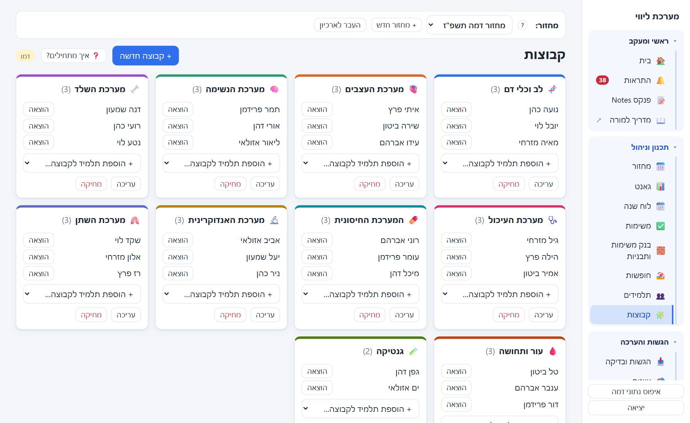
מתי לעבוד לפי קבוצה?
כשכמה תלמידים מגישים יחד עבודה או חולקים משימות משותפות.
מתי לעבוד לפי תלמיד?
כשצריך התקדמות, הערכה או ציון אישיים.
הגשות ובדיקה
הרשימה המרכזית של כל ההגשות במשימות מסוג "הגשת תוצר". לכל קבוצה או תלמיד מוצגים מצב ההגשה, מועד ההגשה, וגרסה אחרונה.
| מסנן | מה מציג |
|---|---|
| דורשים טיפול (ברירת מחדל) | הגשות שממתינות לבדיקה, בקשות, כשלים וכדומה |
| כל ההגשות | הכול |
| לא הוגשו | קבוצות או תלמידים שעדיין לא הגישו |
| טופלו | סומנו "טופל" או שההשלמה אושרה |
| הוחזרו לתיקון, תיקון הוגש | מופיעים כשיש כאלה |
| הוגשו באיחור, כשל בהמרה | נבחרים מכרטיסי הסיכום למעלה |
פעולות בשורה
- בדיקה: פותח את מסך הבדיקה. המספר בסוגריים הוא כמות ההערות.
- בתפריט עוד: היסטוריית גרסאות או פרטי הגשה, הורדת קובץ המקור, הורדת ה-PDF, ניסיון המרה חוזר ו"בקש PDF נוסף".
הגרסה האחרונה היא הנחשבת, והקודמות נשמרות. שימו לב להבדל: משימה יכולה להימשך זמן רב, ובתוכה יכולות להיות כמה גרסאות הגשה.
מסך הבדיקה
מסך אחד לקריאת העבודה, הערות, ניקוד ושליחה. הוא בנוי מלמעלה למטה: שלוש תיבות סטטוס, אזור הניקוד, ואז המסמך עם לוח ההערות.
כתיבת הערה
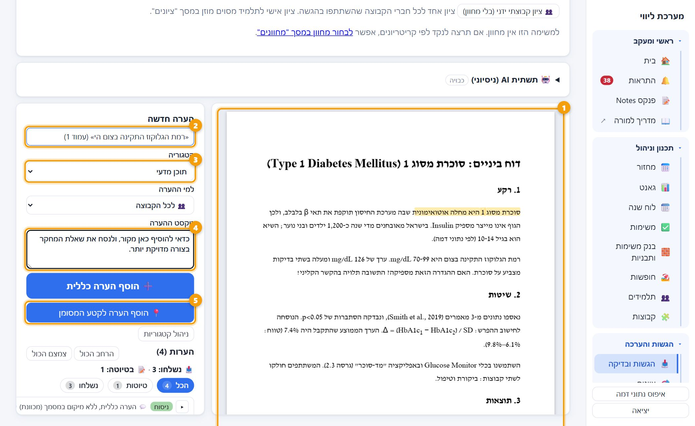
- גוררים על טקסט במסמך כדי לסמן קטע
- הקטע שסומן מוצג כאן
- בוחרים קטגוריה (תוכן מדעי, ועוד)
- כותבים את ההערה
- "הוסף הערה לקטע המסומן". בלי קטע מסומן: "הוסף הערה כללית"
- הערה כללית או מעוגנת: אם אין טקסט שאפשר לסמן (למשל מסמך סרוק), אפשר רק הערות כלליות. המערכת מציגה על כך הודעה.
- למי ההערה: בעבודה קבוצתית אפשר לבחור "לכל הקבוצה" או הערה אישית לחבר מסוים.
- קטגוריות: "ניהול קטגוריות" מאפשר להתאים את רשימת הקטגוריות.
- רשימת ההערות: מסננים לפי כולן, טיוטות ונשלחו. אפשר להרחיב ולצמצם הכול.
- בסרגל המסמך: הקטנה, הגדלה ו"התאם לרוחב".
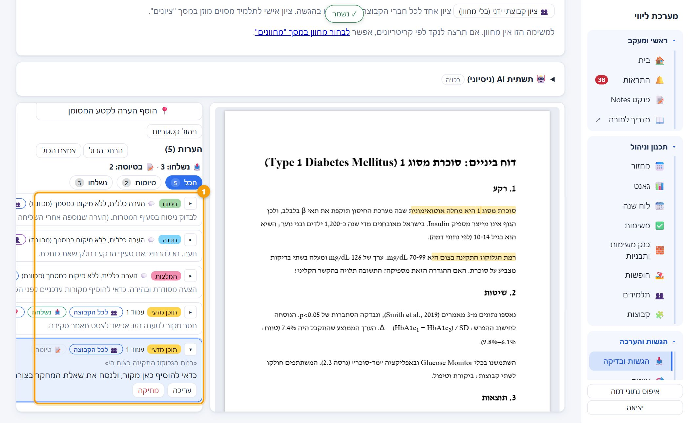
- רשימת ההערות
בראש המסך אפשר לעבור בין גרסאות, לחזור לרשימת ההגשות או לקפוץ ל"ניקוד ולציון".
מחוונים וניקוד
מחוון מפרק הערכה לקריטריונים. יש שלוש רמות נפרדות:
- מחוון בסיס בספרייה, משותף לכל המחזורים. מחווני ברירת המחדל לקוחים מתוכנית הלימודים.
- מחוון משימה: עותק של מחוון בסיס שמשויך למשימה במחזור. אפשר לערוך אותו בלי לשנות את הספרייה.
- ניקוד בדיקה: צילום מצב קבוע של המחוון, שנשמר כשמתחילים לנקד הגשה.
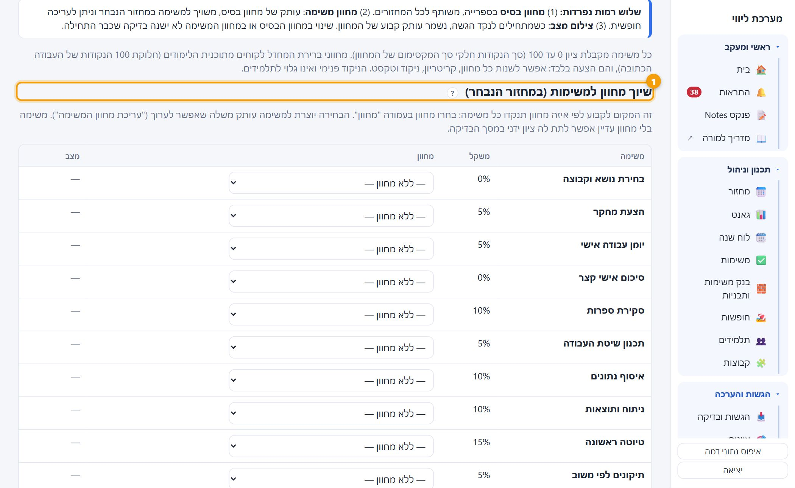
- שיוך מחוון לכל משימה במחזור הנבחר
- ספריית מחווני בסיס: עריכה, שכפול והסתרה
יש שני סוגי מחוון: ניקוד (נקודות לכל קריטריון) ורשימת בדיקה (עומד או לא עומד, בלי ציון). ציון המשימה הוא תמיד בסולם 0 עד 100.
ניקוד במסך הבדיקה
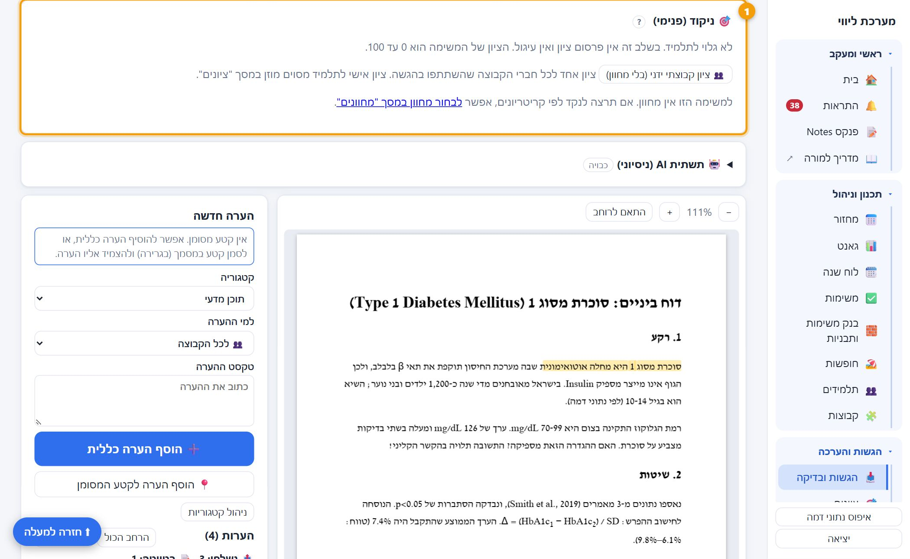
- אזור הניקוד והציון
- ממלאים ניקוד לכל קריטריון. כשכולם מלאים מוצג "סה"כ" וציון מתוך 100.
- לוחצים קבע כציון המשימה. הציון נשמר בטבלת הציונים, וציון קודם נשמר בהיסטוריה.
- שינוי בניקוד אחר כך אינו משנה ציון שכבר נקבע, עד שתלחצו "עדכן את ציון המשימה".
עוד באזור הניקוד
- ציון ידני: כשאין מחוון, מזינים ציון ישירות. בעבודה קבוצתית יש גם "ציון קבוצתי ידני (בלי מחוון)".
- סיכוני פסילה: סימון בלבד, אינו משנה ציון. כשמסמנים, מוצג מראש נוסח ההודעה שתישלח לתלמיד.
- הערת ניקוד פנימית, וגם הצגת הניקוד של גרסאות קודמות של אותה עבודה.
ציונים
המסך נקרא "ציונים (פנימי)". הוא מציג את כל התלמידים, כל משימה בעלת משקל, ואת הציון הכולל.
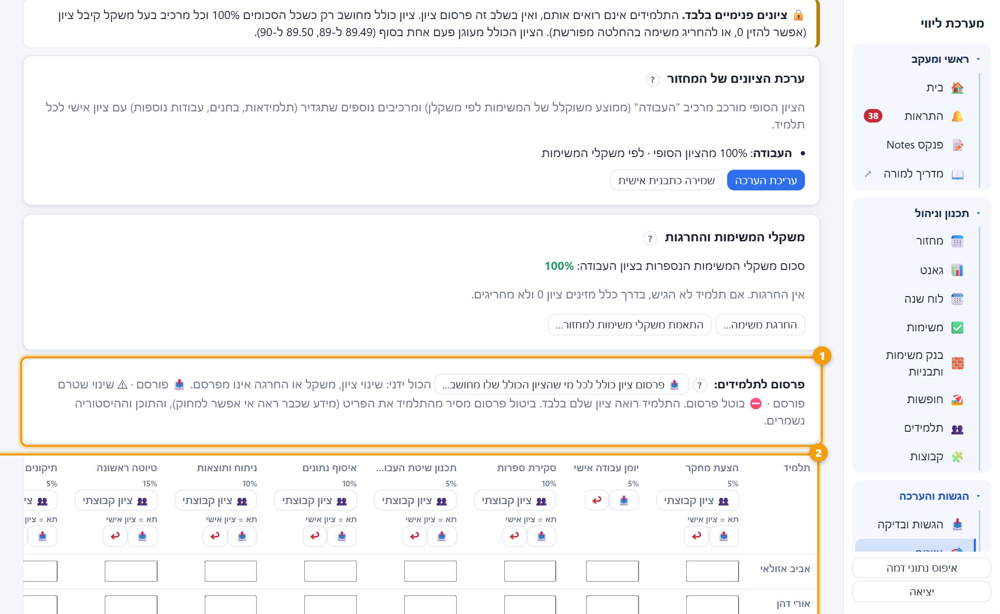
- פרסום לתלמידים: פרסום ציון כולל לכל מי שהציון הכולל שלו מחושב
- הטבלה: תא לכל משימה, וציון כולל בעמודות האחרונות
איך מחושב הציון הכולל
- הציון הסופי מורכב מרכיב "העבודה" (ממוצע משוקלל של המשימות לפי המשקלים) ומרכיבים נוספים שתגדירו, כמו תלמידאות או בחנים.
- הציון מחושב רק כשסכום המשקלים הרלוונטיים הוא 100% וכל רכיב בעל משקל קיבל ציון. המערכת לא מנרמלת משקלים בעצמה.
- העיגון נעשה פעם אחת בסוף: 89.49 הופך ל-89, ו-89.50 הופך ל-90.
- אם הציון "לא מחושב", לחצו על התלמיד, ותראו את הסיבה.
פעולות במסך
- הקלדת ציון בתא (0 עד 100) שומרת אותו. ציון שנקבע מהניקוד מקורו במסך הבדיקה.
- ציון קבוצתי: כפתור בראש עמודת משימה קבוצתית. הציון חל על חברי הקבוצה שהשתתפו בהגשה. תלמיד שהצטרף אחרי ההגשה אינו כלול.
- ציון אישי: הקלדה בתא של תלמיד. מסומן 👤 ולא נדרס אוטומטית, אלא אם סימנתם דריסה.
- החרגה: "החרגת משימה…" לכל המחזור או לתלמיד אחד. המערכת מציגה מראש את ההשפעה על סכום המשקלים.
- משקלים אישיים לתלמיד (סימון ⚖), כשצריך להתאים משקלים במקרה מיוחד.
- התאמת משקלי משימות למחזור ו"עריכת הערכה" לרכיבים נוספים ולתבניות.
פרסום ומה התלמיד רואה
יש שלושה דברים שמתפרסמים לתלמיד, וכל אחד נשלט בנפרד:
| מה | איך מפרסמים | איך מבטלים |
|---|---|---|
| משוב והערות | "שליחת משוב לתלמידים" במסך הבדיקה, או "שלח משוב לעבודות הבדוקות" ברשימת ההגשות | "בטל פרסום כל המשוב" |
| ציון משימה | "פרסם ציון" בכרטיס "מצב פרסום" | "בטל פרסום" |
| ציון כולל | במסך "ציונים", לתלמיד או לכולם | ביטול פרסום ליד התלמיד |
אם שיניתם ציון אחרי שפורסם, מצב הפרסום יציג "פורסם X, כעת Y: שינוי שטרם פורסם". תלמיד יראה את השינוי רק אחרי שתפרסמו מחדש.
המסך של התלמיד
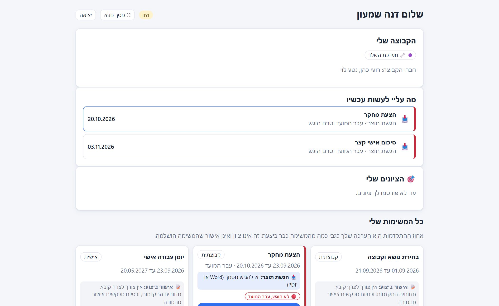
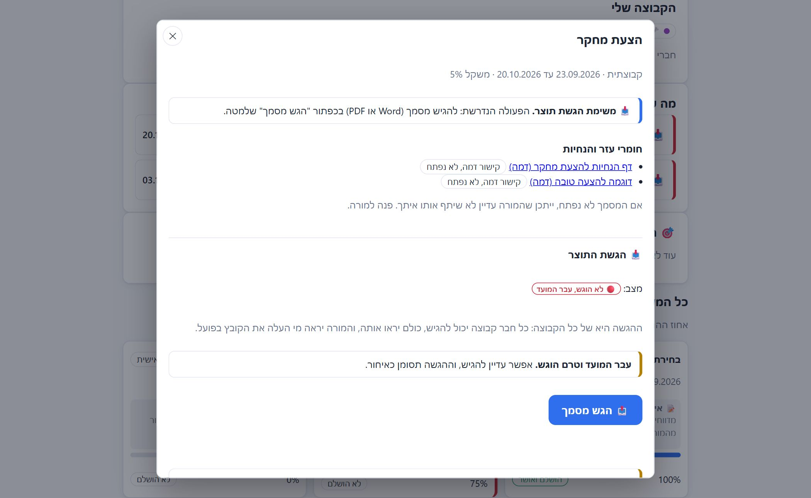
- התלמיד רואה את המשימות שלו ואת המועדים התקפים לו, כולל ארכה.
- הציון מוצג שלם. לא מוצג פירוט קריטריונים או ניקוד.
- בהתאם להגדרות, הוא יכול לראות גם את חברי קבוצתו.
התראות ותזכורות
המסך נקרא "התראות ותזכורות", עם ארבע לשוניות: התראות, תזכורות, יומן שליחה והגדרות.
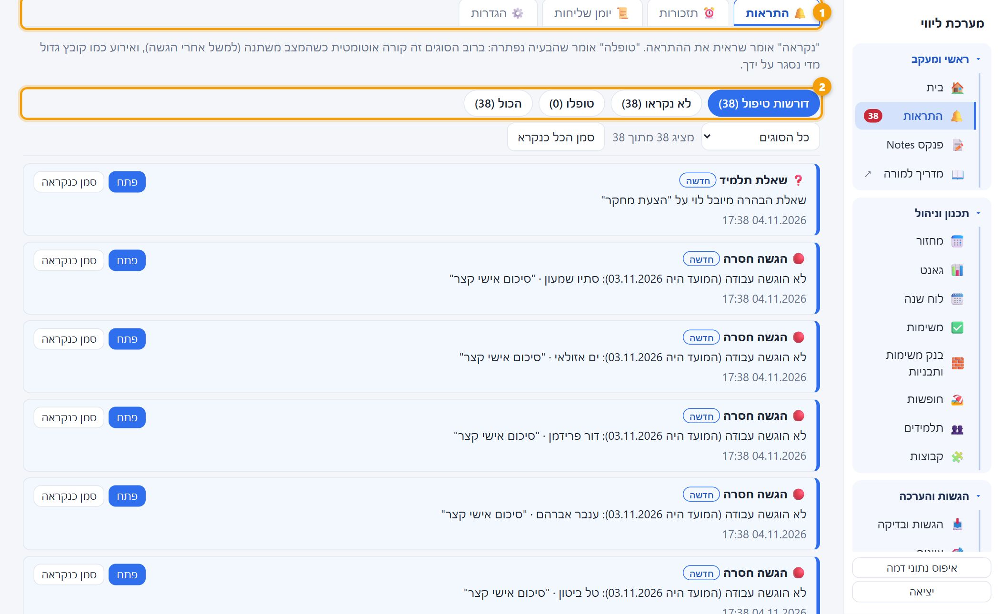
- ארבע הלשוניות
- מסננים: פתוחות, לא נקראו, טופלו, הכול
נקראה לעומת טופלה
"נקראה" אומר שראיתם. "טופלה" אומר שהבעיה נפתרה. ברוב הסוגים זה קורה אוטומטית כשהמצב משתנה (למשל אחרי הגשה). אירוע כמו קובץ גדול מדי נסגר על ידכם. בכל התראה יש כפתור "פתח" שמוביל למקום הרלוונטי.
תזכורות הגשה
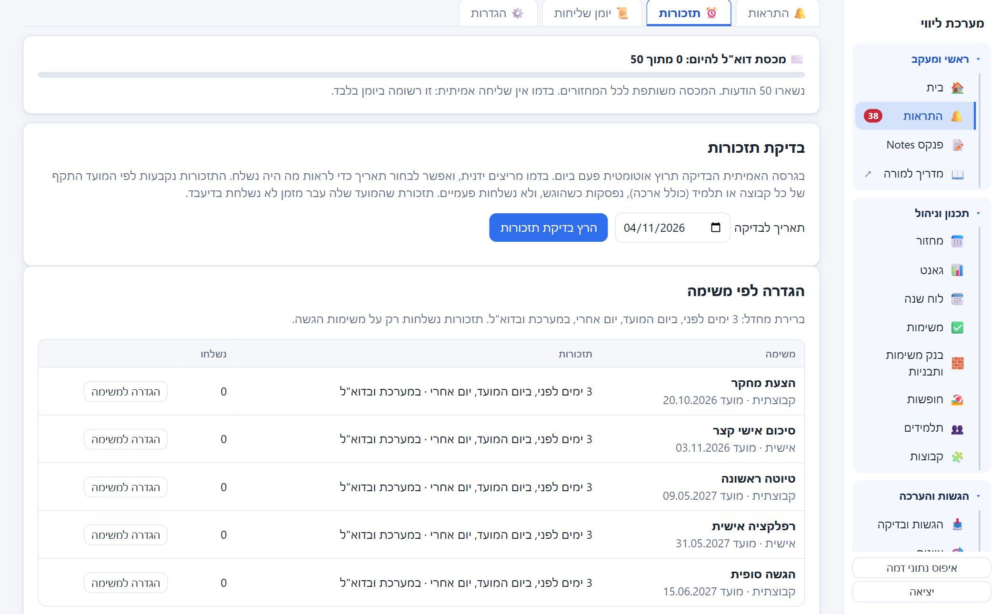
- תזכורת נשלחת לתלמיד שטרם הגיש, לפי הימים שהגדרתם ביחס למועד. היא מתייחסת למועד התקף של כל קבוצה או תלמיד, כולל ארכה.
- היא נפסקת מעצמה כשמוגשת עבודה או כשהמועד זז, ולא נשלחת פעמיים.
- תזכורות נשלחות רק על משימות הגשה. אפשר לכבות או להתאים לכל משימה ("הגדרה למשימה").
- בדוא"ל נשלח קישור בלבד, בלי ציון ובלי מידע רגיש.
- יש מכסה יומית לדוא"ל (מוצגת במסך). כשהיא מלאה, ההודעות נשלחות במערכת בלבד, והדוא"ל נשלח כשיהיה מקום. לכן אל תניחו שכל תזכורת תישלח גם בדוא"ל.
- בגרסה שבה אתם משתמשים הבדיקה רצה אוטומטית פעם ביום. בדמו מריצים אותה ידנית.
Notes, גיבוי וארכיון
פנקס Notes
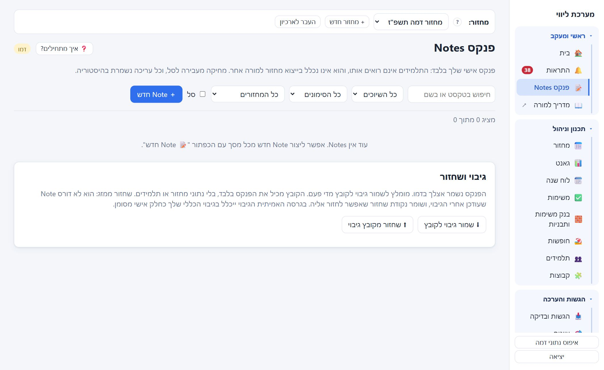
- פנקס אישי שלכם בלבד. התלמידים לא רואים אותו, והוא אינו נכלל בייצוא מחזור למורה אחר.
- אפשר לשייך Note לתלמיד, לקבוצה או להשאיר כללי, ולסמן "דורש טיפול" או "טופל".
- הכפתור הצף 📝 Note חדש זמין בכל מסך. אפשר לגרור אותו למקום נוח, ולחיצה ימנית מאפסת את מיקומו. כשפותחים אותו מתוך בדיקת הגשה, ה-Note משויך לקבוצה או לתלמיד של ההגשה.
- מחיקה מעבירה לסל, וכל עריכה נשמרת בהיסטוריה.
גיבוי ושחזור
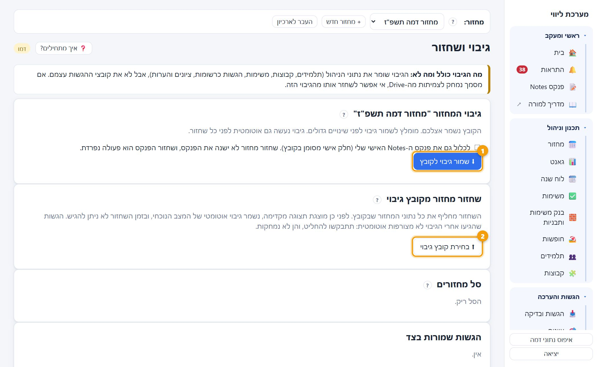
- שמירת גיבוי לקובץ
- שחזור מקובץ גיבוי
| הגיבוי כולל | הגיבוי לא כולל |
|---|---|
| תלמידים, קבוצות, משימות, הגשות (כרשומות), הערות, מחוונים של המשימות, ציונים והגדרות | קובצי ההגשות עצמם ב-Drive, בנק המשימות המשותף והגדרות ההתראות. פנקס ה-Notes נכלל רק אם סימנתם. |
- מומלץ להוריד גיבוי אחת לשבוע ולשמור אותו מחוץ למערכת. כדאי גם לשמור גיבוי לפני שינויים גדולים.
- שחזור: מוצגת תצוגה מקדימה, נשמר גיבוי אוטומטי של המצב הנוכחי לפני כן, ובזמן השחזור לא ניתן להגיש. נשמרים עד 10 גיבויים אוטומטיים, ואפשר "חזרה למצב הזה".
- קובץ חסר: אם קובץ הגשה נמחק מ-Drive, הרשומה מסומנת "קובץ חסר". החזירו את הקובץ ולחצו "קישור מחדש".
- הגשות שמורות בצד: הגשות שהגיעו אחרי הגיבוי. הן לא נמחקות, וצירוף נעשה רק באישורכם.
- סל מחזורים ויומן החלטות נמצאים באותו מסך.
תשתית AI (ניסיוני)
במסך הבדיקה יש חלונית ניסיונית, כבויה כברירת מחדל. אין בה חיבור לספק בינה מלאכותית אמיתי ולא מועבר מידע החוצה. הצעות שלה אינן גלויות לתלמיד, ורק הערה שאישרתם ושלחתם תופיע להם. אם אינכם משתמשים בה, אין צורך לגעת בה.
דברים שכדאי למנוע
שאלות ותשובות
כתבתי הערות על ההגשה. האם התלמיד קיבל אותן?
התלמיד ציין שהמשימה הושלמה. האם היא אושרה?
מה ההבדל בין ארכה להחרגה?
איפה נשמרים הנתונים?
האם תלמיד יכול לראות את הניקוד לפי הקריטריונים?
הגשה נקלטה אבל אי אפשר ללחוץ "בדיקה". למה?
אפשר להחזיר לתיקון גרסה ישנה?
הורדתי גיבוי. האם הקבצים של התלמידים בפנים?
מה ההבדל בין ארכיון לסל?
תלמיד שאל שאלה על הערה. איפה עונים?
איך מכניסים את חופשות משרד החינוך לגאנט?
קיבלתי הודעה שהמערכת עדיין לא עודכנה לגרסה החדשה, כשניסיתי להכניס חופשות. מה זה?
אין חופשות לשנה שלי. מה עושים?
האם התזכורות נשלחות בדוא"ל תמיד?
מושגים בקצרה
| מחזור | שנת עבודה של קבוצת תלמידים, עם כל הנתונים שלה. |
|---|---|
| הגשת תוצר | משימה שהתלמיד מעלה אליה קובץ. |
| אישור ביצוע | משימה שהמורה מאשר שהושלמה, בלי הגשת קובץ. |
| טיוטה | הערה שנכתבה ועוד לא נשלחה. התלמיד לא רואה אותה. |
| משוב | ההערות שנשלחו לתלמיד בפעולת שליחה. |
| מחוון בסיס, מחוון משימה | ספרייה משותפת, ועותק שמשויך למשימה במחזור. |
| ארכה | מועד הגשה שונה ליחידה אחת. |
| החרגה | הוצאת משימה מחישוב הציון הכולל. |
| השלמה | מצב שמאושר על ידי המורה בלבד. |
| חותמת זמן | מועד ההגשה שנשמר אוטומטית עם כל גרסה. |
| ארכיון | מחזור לקריאה בלבד. |
רשימת בדיקה למורה מתחיל
- אני יודע לבחור מחזור ולהבדיל בין מחזורים.
- הכנסתי תלמידים ושייכתי אותם לקבוצות.
- יצרתי משימות, יש להן משקלים וסכומם 100%.
- אני יודע להבדיל בין "אישור ביצוע" ל"הגשת תוצר".
- אני מבין שמשימה מהבנק היא עותק.
- אני יודע לפתוח הגשה, לכתוב הערות ולשלוח משוב.
- אני יודע מה נשאר פנימי ומה מתפרסם.
- שייכתי מחוונים וקבעתי ציון משימה.
- אני יודע להחזיר עבודה לתיקון.
- אני יודע איפה מוצאים התראות ואיך מורידים גיבוי.